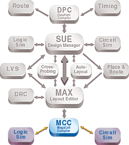
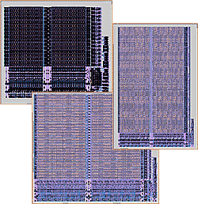
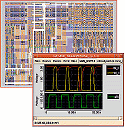

| Micro Magic Tools Overview |
| • SUE Design Manager |
| • DataPath Compiler |
| • MAX Layout Editor and MAX-LS Layout System |
| • MegaCell Compiler |
|
|
D A T A S H E E T

The MegaCell Compiler allows users to easily build their own generators for SRAMs, DRAMs, ROMs, pad rings, or any other regular or semi-regular structure, in just minutes. Verilog, HSPICE, critical path netlists, and timing models can all be generated automatically.
The MegaCell compiler makes building all types of regular structures such as SRAMs, CAMs, DRAMs, register files, FIFOs, ROMs, PLAs, and pad rings fast and easy. The MegaCell compiler is so fast that any size repetitive structure can be built in the time it takes to load the data from the disk—mere seconds for even multi-megabit SRAMs.
Design and Build Custom Memories
The MegaCell is a compiler designer's helper. It allows custom memory designers to quickly and easily construct and verify complete megacells from correct leaf cell
layouts. It significantly reduces the effort required for full-custom memory design.
More than just a simple tiler, the MegaCell compiler has a fully hierarchical, relative-position tiling engine driven by a simple syntax. Or instances can be arranged in the desired configuration and it determines the syntax to create that configuration. Because the tiler is relative and uses the abutment boundaries of the cells themselves, process shrinks and even technology retargeting are effortless once the leaf cells have been migrated.
| Figure 1. Build a family of SRAMs in a matter of minutes. |
 |
To complete the megacell, this tool propagates ports from leaf cells to the top level and renames them under programmatic control. Simply program the tool to propagate the output ports on all of the sense amps, for example, and you get all of the ports from DOUT[0] to DOUT[31]. Because MegaCell compiler handles tiling through programming and port propagation, megacells can be easily parameterized. The programming interface is so concise that a complete SRAM implementation requires less than 100 lines of code.
This tool allows a designer to parameterize the memory, that is, to build different sizes and configurations of the same basic memory structure simply by changing key parameters such as the number of rows or columns. This vastly speeds construction and verification, especially in large memory designs. By doing all construction and verification first on a very small structure, the iteration time is minimized. When the small structure passes, the full size typically passes on the first try. Hence, parameterization helps regardless of the number of final sizes and configurations desired.
Analyze and Verify Custom Memories
A big challenge in megacell design is verification, because of the size and analog circuit techniques needed for high speed and low power. Physical, functional, performance,
and noise analysis verification are essential parts of all megacells. The MegaCell compiler extracts both complete SPICE and Verilog netlists of the finished megacells. In
addition, it automatically extracts critical paths for performance evaluation.
In fact, the MegaCell compiler can create a compacted netlist of your megacell through any cells that you select. This netlist is generated by tracing the cone of logic backwards to the input ports and forwards to the output ports from the selected cells., and pruning unnecessary gates, resulting in a thousand-time decrease in SPICE deck size. Thus, selecting the memory cell that is furthest away from the decoders, gives the longest path for the memory.
The Power of MAX
| Figure 2. View and analyze "critical" path for a megacell. |
 |
Features